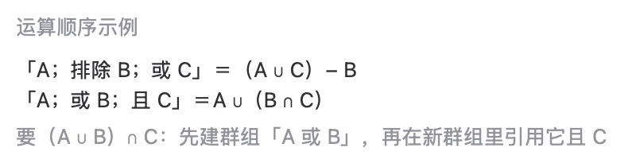
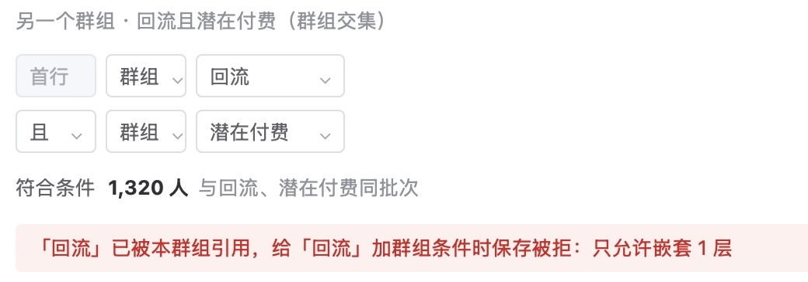
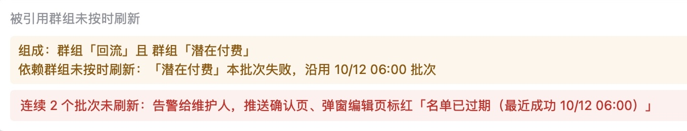

已判 0 / 11 条 · 判完了
弹窗标签推送系统 · 2026-10-16 · 第 6 份产出 · 判断题
第 6 份｜标签群组取交集的规则，和「且、或、排除」混用时的运算顺序，够不够交给研发照着做？
按下面 11 条标准逐条看 AI 评审的结论（每条只答「是」或「否」），你只判同意或不同意；也可补标准里缺的条目。
背景：推送和弹窗都按标签群组选人；群组现有组合方式「且」「或」「排除」，本期新增在条件里引用群组（群组交集），由标签系统实现，推送后台只读取和显示。
01判断标准：6 条，先看算法，再看引用边界与编辑时可见，最后看现状核对
规则唯一确定「且」「或」混用
1「且」「或」混在一个群组里时只有一种算法：写明谁先算，并配了算例
涉及 运营在一个群组里混用「且」「或」；研发按此实现群组计算|出处 业内做法：Braze、GA4、Amplitude、Mixpanel
业内顶尖产品怎么做
- Braze：组内、组与组之间都可选「且」或「或」，用分组表示括号，例「(A 且 B 且 C) 或 (C 且 E 且 F)」；不分组时谁先算，文档未写 Braze 文档
- GA4：组内每个条件可选「且」或「或」，组与组之间固定为「且」 GA4 文档
- Amplitude：用「+ Add」加的条件之间为「且」，用「Or」加的为「或」；混用时谁先算，文档未写 Amplitude 文档
- Mixpanel：分群可用「且」「或」串联；混用时谁先算，文档未写 Mixpanel 文档
我们需求文档与原型对应的部分

会员标签设定 › 标签群组设定 › 运算顺序示例
需求文档原文：首行与组合方式为「且」「或」的行为纳入条件；「且」优先于「或」
。验收用例：条件依次为「A；或 B；且 C」，保存后名单等于 A ∪ (B ∩ C)，编辑区计算式与结果一致。
AI 评审：是 需求文档「运算顺序」一节写明且优先于或，配A；或B；且C＝A∪(B∩C)算例与验收用例
你判：
规则唯一确定「排除」放在哪一行
2「排除」不论写在第几行，都在最后从纳入的人里扣掉，不会被后面的「或」加回来
涉及 潜在流失（两档）排除新增、回流|出处 业内做法：Braze、GA4、Amplitude
业内顶尖产品怎么做
- Braze：排除组与筛选组之间恒为「且非」；命中排除组的用户，即使满足筛选条件也被排除 Braze 文档
- GA4：先算全部纳入条件，再套用排除条件；排除可选「暂时排除」或「永久排除」 GA4 文档
- Amplitude：满足排除条件的用户，即使满足其他全部条件也不进分群 Amplitude 文档
我们需求文档与原型对应的部分
会员标签设定 › 标签群组设定 › 组合条件（群组「潜在流失（两档）」）
需求文档原文：组合方式为「排除」的行合成排除集，最后统一从纳入结果中扣除，与行的位置无关
。验收用例：条件依次为「A；排除 B；或 C」，结果＝(A ∪ C) − B，名单不含 B 的任何成员。
AI 评审：是 「运算顺序」一节写明排除集最后统一扣除、与行位置无关；算例(A∪C)−B及验收用例
你判：
需求覆盖交叉人群不写 SQL 也能配
3运营要的交叉人群，在标签群组设定页就能配出，不用请数据人员另写 SQL
例：回流且潜在付费；潜在流失两档取「或」，再排除新增、回流；(A 或 B) 且 C
涉及 回流且潜在付费、潜在流失（两档）|出处 你定的：「交集是重点，是必经之路」（9/28）；主管计划：标签补「or」，后续增加「交集」；业内做法：Braze、GA4、MoEngage
业内顶尖产品怎么做
- Braze：「分群成员」筛选可把另一个分群当条件；用分组可直接写出 (A 或 B) 且 C Braze 文档
- GA4：组内用「或」、组与组之间为「且」，(A 或 B) 且 C 分两组即可配出 GA4 文档
- MoEngage：已有分群可与其他条件按「且」「或」「排除」组合；用嵌套筛选可写出「(A 或 B) 且 C 且 D」 MoEngage 文档
我们需求文档与原型对应的部分

会员标签设定 › 标签群组设定 › 另一个群组「回流且潜在付费」
每行可选标签或群组：群组放在「且」处取交集，「或」处取并集，「排除」处排除整个群组。编辑区没有括号：要 (A 或 B) 且 C，先另建群组「A 或 B」，再在新群组里引用它「且 C」。
AI 评审：是 「群组交集」一节写明群组可作条件；三例原型均可配，(A或B)且C先建群组再引用
你判：
边界、异常与存量群组引用群组的边界与名单时点
4群组引用群组时，可嵌套几层、最多引用几个、怎样防止互相引用、上层群组用哪一批名单，都已写定
涉及 引用了群组的群组；读取名单的推送、弹窗|出处 业内做法：Braze、MoEngage
我们需求文档与原型对应的部分

会员标签设定 › 标签群组设定 › 被引用群组未按时刷新
只嵌套 1 层：有群组条件的群组不能被引用，已被引用的群组不能再加群组条件，保存时校验并提示相关群组名；一个群组最多引用 5 个群组（系统配置，可改）。每 25 分钟一个批次，先算没有群组条件的群组，再算引用群组的群组，读同一批次的名单；被引用群组本批失败时沿用上一批并标黄，连续 2 批未刷新标红并告警维护人，超过 24 小时引用它的排程推送自动暂停。
AI 评审：是 「群组交集」一节写定嵌套1层、引用上限5个、保存校验防互引、同批次读取与依赖过期处理
你判：
需求覆盖编辑时保存前看出写错
5运营编辑群组时，能看到系统将按什么式子算、每一段剩多少人，保存前就能发现顺序写错
涉及 配群组的运营|出处 业内做法：Braze、MoEngage、GA4
业内顶尖产品怎么做
- Braze：「查看漏斗统计」逐个筛选显示到这一步为止的估算人数与占比；排除组另显示排除后「预计可触达人数」；估算按随机样本，可点「计算精确统计」 Braze 文档
- MoEngage：点「显示人数」看分群总人数与可触达人数 MoEngage 文档
- 把组合逻辑显示成一行算式：Braze、GA4 文档都没写；GA4 分群编辑器说明也未写编辑时的人数预览
我们需求文档与原型对应的部分
会员标签设定 › 标签群组设定 › 组合条件与人数预览
编辑区下方实时显示计算式；纳入条件每段显示累计人数，排除集显示扣除人数；改任一条件后 2 秒内出估算、15 秒内出准确值。
AI 评审：是 「运算顺序」一节有编辑区实时计算式，「人数预览」一节写明改条件2秒出估算、逐段累计与排除扣除人数
你判：
事实与依据现有系统怎么算
6现有标签群组设定里「或」「排除」混用时实际怎么算已经查明，算法改动后人数会变的现有群组已列出
涉及 已在用、混用「或」「排除」的现有群组|出处 写作标准：「事实只写已证实的……推断不同会导致方案不同时，按推断分支写方案」；「没查实的能力，既不写成已能做，也不写成做不到」
我们需求文档与原型对应的部分
- 我们这里没有：现有页面混用「或」「排除」时的实测结果；算法改动后人数会变的现有群组清单
需求文档只写了安排：评审前运营……在现有标签群组设定实测「或」「排除」与混合顺序并截图；不支持或顺序不同时按本节改，改前列出现有混用群组并核对人数变化
。「或」已上线是 9/28 按推断定下的；混用时的顺序没有资料。
AI 评审：否 现状只写评审前由运营实测，缺混用实测结果和人数会变的现有群组清单
你判：
业内做法都已打开官方文档核对，标「未核对」的除外（MoEngage 引用上限与嵌套层数取自此前对标记录，其帮助中心连不上）。
02按评审维度补齐的标准：5 条，补上验收用例、字段、方向、用词与多余内容
按评审维度表补齐，每条小标写所属维度。
可验证每条规则都有验收用例
74.3.1、4.3.2 的每条规则（交集、嵌套 1 层、引用上限 5 个、「且」先于「或」、排除最后扣除）在验收用例 T214–T228 里都有对应用例，用例写了输入群组和预期结果
看哪里 4.3 引言「验收 T214–T228」；4.3.2「示例」行；原型页验收用例表|出处 业内做法：ISO/IEC/IEEE 29148「可验证」（转述）；Anthropic「定义成功标准」
业内公认做法
- ISO/IEC/IEEE 29148（需求工程国际标准）：单条需求须「可验证」，能证明是否满足，最好能度量 转述来源（标准原文收费，未读）
- Anthropic「定义成功标准」：好标准要可度量，用量化指标或定义清楚的定性尺度；常见维度含任务完成度，包括边界情况 Anthropic 文档
我们需求文档与原型对应的部分
需求文档 4.3 只写编号范围验收 T214–T228
；用例正文在原型页验收用例表，五栏：编号、条件、操作、预期结果、对应原型页。按规则摘录：
- 交集 T214：「回流」16,564 人、「潜在付费」4,860 人，新建「回流且潜在付费」→ 人数等于同一批次两群组的交集（例 1,320 人），批次号相同
- 嵌套 1 层 T215：「回流」已被引用，编辑时加群组条件 → 保存被拒，列出引用它的群组
- 引用上限 5 个 T216：打开群组下拉 → 只列没有群组条件的启用群组；已引用 5 个时不能再加
- 「且」先于「或」 T220：「A；或 B；且 C」→ A ∪ (B ∩ C)，计算式与结果一致
- 排除最后扣除 T219：「A；排除 B；或 C」→ (A ∪ C) − B，不含 B 的任何成员
- 依赖过期 T217、T218：被引用群组刷新失败、超过 24 小时 → 标黄、标红、排程推送暂停
AI 评审：是 交集、嵌套、上限、且先于或、排除最后扣都有验收用例，上限一条写得偏弱
你判：
格式与粒度规则都落到字段
84.3.1、4.3.2 的规则在 5.23 字段表里都有对应字段（字段名、数据类型、必填、规则说明），研发不用再问字段
看哪里 4.3.1、4.3.2；5.23「标签群组设定新增字段」|出处 写作标准「需求文档：读者为研发，写到字段级」；业内做法：ISO/IEC/IEEE 29148「符合模板」（转述）
依据的标准怎么写
- 写作标准·需求文档：读者为研发，写到字段级；评审细节需求时逐条列出每一条需求
- ISO/IEC/IEEE 29148：单条需求「符合模板」，抽象层次恰当、不含实现细节 转述来源（标准原文收费，未读）
我们需求文档对应的部分
5.23 共 21 个字段，每个写程序命名、数据类型、必填、规则说明、备注。两节规则与字段的对应：
- 每行选标签或群组；且／或／排除 序号 1 条件项类型（Enum，必填）、2 条件项（Int，必填）、3 组合方式（Enum，第二行起必填，说明写「运算顺序见 4.3.2」）
- 嵌套 1 层 序号 2 规则说明：下拉只列没有群组条件的启用群组；已被引用的群组「群组」类型置灰
- 引用上限 序号 12 引用群组上限（Int，默认 5）
- 批次与读取 序号 4 名单批次号（String）
- 依赖过期 序号 5 最近成功批次时间（DateTime）
- 标签计算状态、失败隔离与脚本校验 序号 13、14、21
- 编辑区显示计算式 5.23 未单列字段
AI 评审：是 组合条件、嵌套、上限、批次、计算状态均有字段；计算式由条件实时拼出
你判：
方向一致交集是本期要做的能力
9群组交集写成本期要做的能力，没有降为可选功能或列入后续
看哪里 4.3 引言「范围」；3.4 适用范围、3.5 排除项|出处 你定的：「交集是重点，是必经之路」（9/28）；已定的改动口径：群组交集列为小改动
依据的标准怎么写
- 你 9/28：「交集是重点，是必经之路；只要把人群圈选想清楚，自然会得出需要交集的结论」
- 已定的改动口径：17 项改动中需开发 11 项，群组交集是其中 7 项小改动之一
我们需求文档对应的部分
- 4.3 引言：「范围：本需求含群组交集、人数预览、条件说明、变更记录、引用清单 5 项，以及配套的运算顺序……」
- 3.5 排除项：「本需求含 4.3 全部 8 小节，由标签系统实现：群组交集、运算顺序……」
- 3.4 适用范围：涉及标签群组的只有一行，「标签群组不分游戏维度」
- 范围分级总表：群组交集所在的「标签系统配套」块，建议「本期必要」，理由「按人群发依赖群组算对」
- 追溯表：需求项「标签群组设定配套改动」分级「本期必要」
AI 评审：是 范围写明含群组交集，范围分级总表列为本期必要，没有列入后续
你判：
措辞与指代群组、批次、引用各用一个名字
104.3 里「群组」「标签群组」「批次」「引用」各只用一个名字，第一次出现时写明指什么
看哪里 4.3 引言与 4.3.1 表|出处 写作标准「同一事物全文只用一个名字」「概念第一次出现就交代它是什么」
依据的标准怎么写
- 写作标准：同一事物全文只用一个名字；同一页、相邻页出现两个说法（如玩家群与群组、标签人群与标签群组），读者会当成两样东西
- 写作标准：概念第一次出现就交代它是什么
我们需求文档对应的部分
4.3 引言至 4.3.2 的用词：
- 群组 38 处；「标签群组」3 处，都在页名「标签群组设定」里。定义在前文 4.1.1 名词表：「用几个会员标签按且、或、排除组合出的玩家群……名单每 25 分钟刷新」
- 批次 12 处，另有「刷新批次」「批次号」「同一批次」。首次出现在引言「同批次刷新」；定义在 4.3.1「批次」行：「每 25 分钟一个刷新批次，名单带批次号」。4.2 另有「迁移批次」，指客户端发版分批
- 引用 16 处（含「被引用」4 处）。首次出现在引言功能名「引用清单」；4.3.1「定义」行写「每一行可选标签或群组」，未用「引用」二字
- 同一对象的其他叫法 「上层群组」「依赖群组」各 1 处，见「依赖过期」行
AI 评审：否 引用他组的群组另称「上层群组」，被引用的另称「依赖群组」；「引用」首现未解释
你判：
无多余内容只写规则与例子
114.3.1、4.3.2 只写规则与例子，没有论证要不要做的段落和工作过程用语（如「请评审定」）
看哪里 4.3.1、4.3.2 全文|出处 写作标准「需求文档：不写成论证要不要做的稿子」；你 10/14：「请评审定四个字是你我对话的内容，不是实际要给读者看的内容」
依据的标准怎么写
- 写作标准·需求文档：评审细节需求时逐条列出每一条需求，不写成论证要不要做的稿子
- 写作标准·要删掉的内容：过程痕迹与元信息，如评审、上级、版本沿革、编排说明、与研发的沟通过程
- 你 10/14：「请评审定四个字是你我对话的内容，不是实际要给读者看的内容」
我们需求文档对应的部分
两节都是规则表。行名：4.3.1 定义、嵌套、引用上限、批次、读取、依赖过期、标签计算状态、失败隔离与脚本校验；4.3.2 纳入、排除、显示、示例、现状核对。表内规则之外的文字（原文）：
- 补充标记 「（10/16 夜补充）」4 处；4.3 标题「（10/15 夜补充）」
- 成本与指引 「成本：小改动」；「成本：中等（标签系统）；做法见第 9 章研发 72」
- 事故出处 括注一起事故单：一个标签脚本不合法，重启时其余标签的初始化被中止
- 现状核对行 「评审前运营（第 9 章运营 16）在现有标签群组设定实测「或」「排除」与混合顺序并截图」
- 「请评审定」「主管」 两节中没有
AI 评审：否 表内留有「夜补充」标记、成本标注和评审前让运营实测的工作安排
你判：
ISO/IEC/IEEE 29148 原文收费，按已核对的论文转述；其余业内做法已打开官方文档核对。
03参考案例：你推翻过的两份同类稿
例 1 没核实的现状，写成了系统做不到
- 你的原话
- 「目标人群圈不出这个问题需要核实」（10/9）
- 当时的稿
- 呈交版第二版问题一「1／5：五类目标人群中可直接圈出的只有新增」；依据是本地导出数据算不出人数，不是后台标签的能力
- 改后
- 删去问题一；新增、回流、破产沿用现有判定，潜在付费、潜在流失给出定义并新建标签
例 2 需求按现有后台能不能做，先删掉了交集
- 你的原话
- 「我们写需求肯定是往好了写往全面了写」（10/8）
- 当时的稿
- 需求分析 15 个场景，范围「优先基于现有后台配置」；场景表里没有人群交集与排除、弹窗与推送合计上限、推送跳转等
- 改后
- 按理想状态写全，场景补到 25 个；成本分层放到方案设计，另列短期快速提升
04怎么判
直接在页面上点：每条下面点「同意」或「不同意」（不同意可写一句理由），页面最下面可补还缺的标准；点完自动保存，判完在对话里说一声「判完了」即可。
05还缺什么，判完没有
原文：原型 · 标签群组设定 需求文档 · 群组交集与运算顺序 请你判的 10 份产出